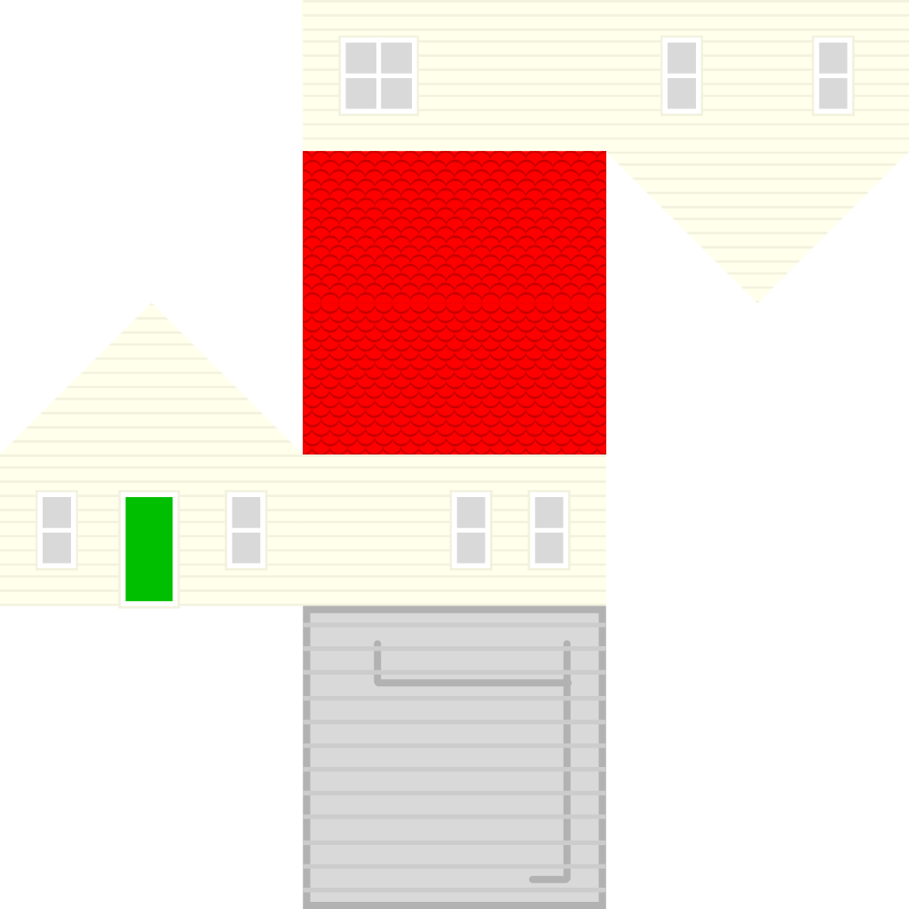

Texture Mapping applies 2D images to the surfaces of 3D models, adding visual detail and increasing the potential for visual fidelity.
This is the tiny house model, wrapped in the following image.
| 1.0 |  | ||
| $v$ | |||
| 0.0 | |||
| 0.0 | $u$ | 1.0 | |
We overlay a 2D texture coordinate system on this image, from 0.0 to 1.0, along the $u$ and $v$ axes.
Each vertex in the model has a texture coordinate attribute giving its 2D location in that image.
This attribute is assigned to a varying by the vertex shader. Thus, each fragment in the frame buffer has a texture pixel, a texel, associated with it.